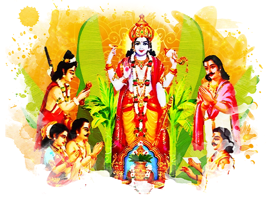

Satya Narayan Puja - Worship of Lord Satya Narayan
Satya Narayan Puja: Worship of Lord Satya Narayan
Satya Narayan Puja is a sacred Hindu ritual dedicated to Lord Satya Narayan, the god of truth, blessings, and prosperity. This puja is performed to seek his blessings for a successful and prosperous life.
What is Satya Narayan Puja?
Satya Narayan Puja is an important Hindu tradition that honors Lord Satya Narayan, an incarnation of Lord Vishnu. Lord Satya Narayan is the god of truth, who blesses devotees with peace, prosperity, and well-being. The puja is performed to seek his blessings for truthfulness, harmony, and success in life.
Why Do We Perform Satya Narayan Puja?
- Truth and Prosperity: Satya Narayan Puja is performed to seek blessings for truthfulness, honesty, and prosperity in life.
- Happiness and Peace: Lord Satya Narayan is believed to bring happiness, peace, and prosperity to the devotees' homes and lives.
- Overcoming Challenges: This puja helps devotees overcome obstacles, providing them with divine guidance and support.
- Gratitude and Devotion: Worshipping Lord Satya Narayan promotes gratitude and devotion, helping individuals strengthen their spiritual connection with the divine.
- Spiritual Growth: The puja encourages self-improvement, spiritual growth, and the pursuit of righteousness in life.
Benefits of Satya Narayan Puja
- Peace and Prosperity: Satya Narayan Puja brings prosperity, peace, and happiness to the devotee's life.
- Divine Blessings: The puja is believed to bestow divine blessings, leading to success in personal and professional life.
- Overcoming Obstacles: Performing Satya Narayan Puja helps remove obstacles, ensuring a smooth and successful path.
- Spiritual Strength: This puja enhances the devotee's spiritual strength and helps them lead a righteous life.
- Good Health and Well-being: Lord Satya Narayan is believed to grant good health and remove ailments from the devotee's life.
How to Perform Satya Narayan Puja (Step-by-Step)
Satya Narayan Puja is usually performed on Purnima (full moon day) or any auspicious day. Here's how to perform the puja:
- Preparation: Cleanse the space or altar and place an idol or image of Lord Satya Narayan. Offer flowers, incense, a lamp (preferably ghee), and fruits or sweets.
- Cleanse Yourself: Take a bath and wear clean clothes, preferably in yellow or white, which are considered auspicious for Lord Satya Narayan.
- Offer Flowers and Incense: Offer fresh flowers to Lord Satya Narayan and light incense to purify the surroundings.
- Chant Satya Narayan Mantras: Recite mantras like "Om Satya Narayanaya Namah" or "Satya Narayan Ki Jai" to invoke Lord Satya Narayan’s blessings.
- Offer Prayers: Pray for truth, prosperity, happiness, and spiritual growth in your life.
- Conclude the Puja: Perform the Aarti (singing devotional songs) and offer gratitude to Lord Satya Narayan for his blessings.
- Prasad (Offering): Offer prasad such as sweets, fruits, and distribute it among family or devotees.
- Regular Practice: Regularly performing Satya Narayan Puja, especially on Purnima or any auspicious day, invites divine blessings in your life.
Conclusion
Satya Narayan Puja is a powerful ritual that helps devotees seek the blessings of Lord Satya Narayan for peace, prosperity, and spiritual growth. By performing this puja, one can overcome obstacles, find success in life, and experience divine protection and blessings.